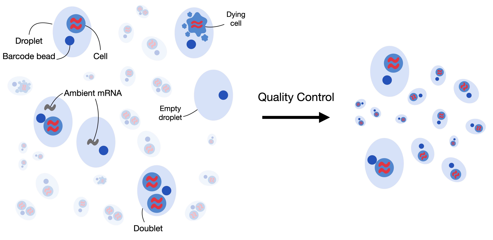
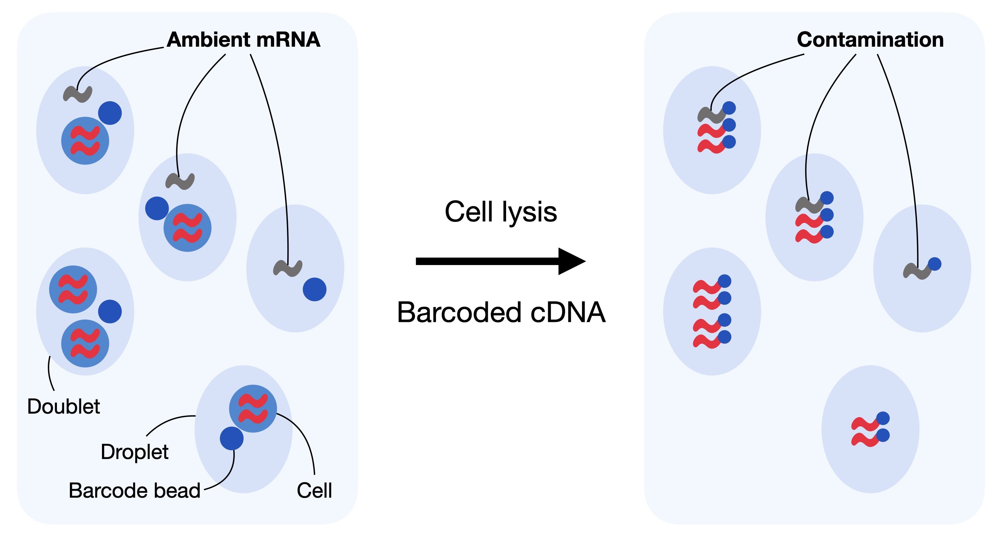
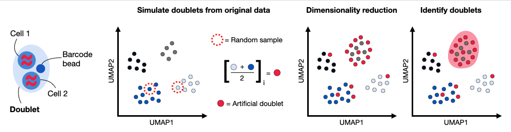

8. 质量控制#
关键要点
对质量差的细胞进行过滤应当以绝对偏差的中位数为基础，并采用宽大的截断方式，以避免对较小的亚群产生偏见。
基于特征的过滤对下游任务并未显示出益处。
使用 scDblFinder 等工具可以高效地检测双细胞。
双细胞检测方法不应在代表多个批次的 scRNA-seq 汇总数据上运行。
环境设置
安装 conda:
在创建环境之前，请确保 conda 已安装在您的系统中。
保存 yml 内容:
将 yml 选项卡中的内容复制到名为
environment.yml的文件中。
创建环境:
打开终端或命令提示符。
运行以下命令：
conda env create -f environment.yml
激活环境:
创建好环境后，使用以下命令激活它：
conda activate <environment_name>
替换
<environment_name>，名称就是在environment.yml文件中指定的那个。在 yml 文件里，它看起来像这样：name: <environment_name>
验证安装:
通过运行以下命令，检查环境是否创建成功：
conda env list
name: preprocessing
channels:
- bioconda
- conda-forge
dependencies:
- conda-forge::ipywidgets=8.1.5
- conda-forge::leidenalg=0.10.2
- conda-forge::numba=0.61.0
- conda-forge::python=3.12.9
- conda-forge::r-base=4.3.3
- conda-forge::r-soupx=1.6.2
- conda-forge::r-sctransform=0.4.1
- conda-forge::r-glmpca=0.2.0
- conda-forge::rpy2=3.5.11
- conda-forge::scanpy=1.11.1
- conda-forge::session-info=1.0.0
- bioconda::anndata2ri=1.3.2
- bioconda::bioconductor-scdblfinder=1.16.0
- bioconda::bioconductor-scry=1.14.0
- bioconda::bioconductor-scran=1.30.0
- bioconda::bioconductor-glmgampoi=1.14.0
- pip
- pip:
- lamindb[bionty,jupyter]
获取数据和笔记本
本书使用 lamindb，并通过 theislab/sc-best-practices 实例 来存储、共享和加载数据集与笔记本。感谢 Lamin Labs 提供免费托管服务。
安装 lamindb
安装 lamindb Python 软件包：
pip install lamindb
可选择创建 lamin 账户
按照以下 说明 注册并登录。
验证你的设置
运行
lamin connect命令：
import lamindb as ln ln.Artifact.connect("theislab/sc-best-practices").df()
你现在应该看到最多100个存储的数据集。
访问数据集（Artifact）
在 Artifacts 页面 搜索该数据集。
加载一个 Artifact 及其对应的对象：
import lamindb as ln af = ln.Artifact.connect("theislab/sc-best-practices").get(key="key_of_dataset", is_latest=True) obj = af.load()
该对象现在已可在内存中访问，并可用于分析。请调整
ln.Artifact.connect("theislab/sc-best-practices").get("SOMEIDXXXX")后缀以获取相应的版本。访问笔记本（Transform）
在 Transforms 页面 搜索该笔记本。
加载笔记本：
lamin load <notebook url>
这会把笔记本下载到当前工作目录。与
Artifacts类似，你可以调整后缀 ID 来获取旧版本。
8.1. 动机#
单细胞 RNA-seq 数据集有两个在分析时应当牢记的基本特性。首先，scRNA-seq 数据存在 dropout（基因漏检），即数据中存在过多的零值，这受限于 mRNA。第二，由于数据可能与生物学相混淆，纠正数据和进行质量控制的可能性可能有限。因此，关键是要选择适合基础数据的预处理方法，而不过分校正或消除生物效应。
用于分析单细胞 RNA测序数据的一整套工具正在快速发展，这得益于新的 测序 技术和越来越多的被捕获的细胞、测量的基因和确定的细胞群 [Zappia and Theis, 2021]。其中许多工具专门用于预处理，目的是处理以下分析步骤:
双细胞 检测
质量控制
归一化
特征选择
降维。
在整个过程中所选择的算法会严重影响下游的数据分析与解释。例如，如果在质量控制时过滤掉过多细胞，你可能会丢失稀有的细胞亚群，错过对有趣细胞生物学的洞见；反之，如果过于宽松，又会在预处理流程中未排除低质量细胞的情况下，使细胞注释变得困难。在许多情况下，你之后仍需重新评估预处理分析，并调整诸如过滤策略之类的设置。
该笔记本的起点是单细胞数据，这些数据已经按照先前的说明处理。原始数据处理章节。数据经过比对以获得分子计数矩阵，即所谓的计数矩阵，或读段计数（读段矩阵）。计数矩阵与读段矩阵的区别取决于 唯一分子标识符（UMI） 是否被纳入单细胞文库构建方案中。读段矩阵和计数矩阵的维度为 number of barcodes x number of transcripts。需要注意的是，这里使用“条形码”而非“细胞”一词，因为一个条形码可能错误地标记了多个细胞（双细胞），也可能没有标记任何细胞（空液滴/空孔）。我们将在“双细胞检测”一节中对此作更详细的说明。
8.2. 环境设置和数据#
我们使用了一个 10x Multiome 数据集，它是为 2021 年 NeurIPS 会议上的一项单细胞数据整合挑战赛而生成的 [Luecken et al., 2021]。该数据集采集了来自 12 位健康人类供体骨髓单个核细胞的单细胞多组学数据，样本在四个不同地点测得，从而获得嵌套式的 批次效应——这是一种分层的技术变异形式，其中批次（如不同地点）嵌套在生物学单元（如各个供体）之内，从而能够更细致地评估技术变异与生物学变异。在本教程中，我们将使用上述数据集中的一个批次，即供体 8 的样本 4，来展示 scRNA-seq 数据预处理的最佳实践。
虽然单细胞计数矩阵预处理一般是一个线性的过程，在其中，各种质量控制和预处理步骤都是按照明确的顺序进行的，但在此引入具体步骤要求我们有时跳跃到我们将在后面的一个分章中引入的步骤。例如，我们利用聚类来进行环境RNA校正，但以后才会引入聚类。
作为第一步，我们导入我们需要的软件包。
import lamindb as ln
import numpy as np
import scanpy as sc
import seaborn as sns
from rpy2.robjects import numpy2ri
from rpy2.robjects.conversion import localconverter
from scipy.sparse import csc_matrix
from scipy.stats import median_abs_deviation
# Suppress verbose logging from Scanpy
sc.settings.verbosity = 0
# Set figure parameters for clean, minimal plots
sc.settings.set_figure_params(dpi=80, facecolor="white", frameon=False)
assert ln.setup.settings.instance.slug == "theislab/sc-best-practices"
ln.track()
我们可以使用以下工具加载该数据集： lamindb.
af = ln.Artifact.connect("theislab/sc-best-practices").get(
key="preprocessing_visualization/quality_control_adata.h5ad", is_latest=True
)
adata = af.load()
adata
/Users/seohyon/miniconda3/envs/preprocessing/lib/python3.12/site-packages/anndata/_core/anndata.py:1758: UserWarning: Variable names are not unique. To make them unique, call `.var_names_make_unique`.
utils.warn_names_duplicates("var")
AnnData object with n_obs × n_vars = 16934 × 36601
var: 'gene_ids', 'feature_types', 'genome', 'interval'
读取数据后，scanpy 会显示一条警告，提示并非所有变量名都是唯一的。这表明有些变量（这里指基因）出现了不止一次，可能导致下游分析任务出错或行为异常。我们执行其建议的函数 var_names_make_unique() 它会在每个重复的索引元素后追加一个数字字符串，从而使变量名变得唯一：“1”、“2”等。
adata.var_names_make_unique()
adata
AnnData object with n_obs × n_vars = 16934 × 36601
var: 'gene_ids', 'feature_types', 'genome', 'interval'
数据集有形状 n_obs 16,934 × n_vars 36,601。这意味着 barcodes x number of transcripts。我们还进一步查看了.var 中的更多信息，包括 gene_ids（Ensembl ID）、feature_types 和 genome。
之后的大多数分析任务都假定数据集中的每一项观测都代表一个完整单细胞的测量。在某些情况下，这种假设可能会被低质细胞，无细胞RNA污染，或双细胞所违反。这个教程将指导您纠正和删除这些违规事件，并获得高质量的数据集。
{kind=link}

图8.1 单细胞RNA-seq数据集可以包含低质细胞，无细胞RNA和双细胞。质量控制旨在消除和纠正这些现象，以便获得高质量的数据集，其中每次观测都是完整无缺的单细胞。#
8.3. 过滤低质量细胞#
质量控制的第一步是从数据集中移除低质量细胞。当一个细胞检测到的基因数量较少、计数深度较低且线粒体计数占比较高时，它的细胞膜可能已经破损，这可能表明这是一个正在死亡的细胞。由于这些细胞通常不是我们分析的主要目标，并且可能扭曲下游分析，因此我们在质量控制阶段将其移除。为了识别它们，我们定义细胞质量控制（QC）阈值。细胞 QC 通常基于以下三个 QC 协变量进行：
每个条形码的计数( 计数深度)
每个条形码的基因数量
每个条形码的线粒体基因计数
在细胞 QC 中，这些协变量会通过设定阈值来过滤，因为它们可能对应于濒死的细胞。如前所述，它们可能反映了细胞膜破裂、胞质 mRNA 已经渗漏、因而只剩下线粒体中 mRNA 的细胞。这些细胞往往表现为计数深度低、检测到的基因少、线粒体读段比例高。然而，关键是要同时考虑这三个 QC 协变量，否则可能导致对细胞信号的误读。例如，线粒体计数比例相对较高的细胞，可能正参与呼吸作用，不应被过滤掉；而计数偏低或偏高的细胞，则可能对应于静止状态的细胞群或体积较大的细胞。因此，在基于单个协变量做出阈值决策时，最好综合考虑多个协变量。总体而言，建议尽量少地剔除细胞、尽可能宽松，以避免把有活力的细胞群或小的亚群过滤掉。
对于少量或小型数据集，QC 往往是人工完成的：查看不同 QC 协变量的分布，找出随后将被过滤掉的离群值。然而，随着数据集规模增大，这项工作变得越来越耗时，因此或许值得考虑通过 MAD（中位数绝对偏差）来自动设定阈值。MAD 的定义为 \(MAD = median(|X_i - median(X)|)\) with \(X_i\) 为相应观测的 QC 指标，它刻画了该指标变异性的一个稳健统计量。与 [Germain et al., 2020]如果某个细胞与中位数相差超过 5 个 MAD，我们就把它标记为离群值，这是一种相对宽松的过滤策略。我们想强调，在完成细胞注释之后重新评估过滤策略，可能是合理的。
在 QC 中，第一步是计算 QC 协变量或指标。我们使用 scanpy 函数来计算它们 sc.pp.calculate_qc_metrics，它还能计算特定基因群体的计数占比。为此，我们定义了线粒体基因、核糖体基因和血红蛋白基因。需要注意的是，线粒体计数会根据数据集所涉物种，以前缀“mt-”或“MT-”进行标注。如前所述，本笔记本所用的数据集是人类骨髓，因此线粒体计数以前缀“MT-”标注。对于小鼠数据集，前缀通常为小写，即“mt-”。
# mitochondrial genes
adata.var["mt"] = adata.var_names.str.startswith("MT-")
# ribosomal genes
adata.var["ribo"] = adata.var_names.str.startswith(("RPS", "RPL"))
# hemoglobin genes.
adata.var["hb"] = adata.var_names.str.contains(r"^HB[ABDEGMQZ]\d*(?!\w)")
现在我们可以用 scanpy 计算相应的 QC 指标。
sc.pp.calculate_qc_metrics(
adata, qc_vars=["mt", "ribo", "hb"], inplace=True, percent_top=[20], log1p=True
)
adata
AnnData object with n_obs × n_vars = 16934 × 36601
obs: 'n_genes_by_counts', 'log1p_n_genes_by_counts', 'total_counts', 'log1p_total_counts', 'pct_counts_in_top_20_genes', 'total_counts_mt', 'log1p_total_counts_mt', 'pct_counts_mt', 'total_counts_ribo', 'log1p_total_counts_ribo', 'pct_counts_ribo', 'total_counts_hb', 'log1p_total_counts_hb', 'pct_counts_hb'
var: 'gene_ids', 'feature_types', 'genome', 'interval', 'mt', 'ribo', 'hb', 'n_cells_by_counts', 'mean_counts', 'log1p_mean_counts', 'pct_dropout_by_counts', 'total_counts', 'log1p_total_counts'
该函数添加了两个额外的列到 .var 和 .obs。我们想在此强调其中的几个:
n_genes_by_countsin.obs是细胞中具有正数的基因数量,total_counts是细胞的计数总数，也可以称为库大小,pct_counts_mt是某个细胞总计数中属于线粒体的比例。
我们现在绘制这三个 QC 协变量 n_genes_by_counts, total_counts 和 pct_counts_mt 每个样本评估各个细胞的捕获情况。
p1 = sns.displot(adata.obs["total_counts"], bins=100, kde=False)
p2 = sc.pl.violin(adata, "pct_counts_mt")
p3 = sc.pl.scatter(adata, "total_counts", "n_genes_by_counts", color="pct_counts_mt")
{kind=link}
{kind=link}
{kind=link}
这些图表明，有些细胞的线粒体计数占比相对较高，这通常与细胞退化有关。但由于每个细胞的计数数量足够高，且大多数细胞的线粒体读数百分比低于 20%，我们仍然可以处理这些数据。基于这些图，现在也可以手动定义过滤细胞的阈值。但我们将转而展示基于 MAD 的自动阈值设定与过滤的 QC。
首先，我们定义一个函数，它接受一个 metric，即对应的一列 .obs，以及 MAD 的数量（nmad），它在过滤策略中仍然较为宽松。
def is_outlier(adata, metric: str, nmads: int):
M = adata.obs[metric]
outlier = (M < np.median(M) - nmads * median_abs_deviation(M)) | (
np.median(M) + nmads * median_abs_deviation(M) < M
)
return outlier
我们现在将此功能应用于 log1p_total_counts, log1p_n_genes_by_counts 和 pct_counts_in_top_20_genes 这三个 QC 协变量，每个都使用 5 个 MAD 的阈值。
adata.obs["outlier"] = (
is_outlier(adata, "log1p_total_counts", 5)
| is_outlier(adata, "log1p_n_genes_by_counts", 5)
| is_outlier(adata, "pct_counts_in_top_20_genes", 5)
)
adata.obs.outlier.value_counts()
outlier
False 16065
True 869
Name: count, dtype: int64
pct_counts_Mt 用3个MAD过滤。此外，线粒体计数百分比超过8%的细胞被过滤掉。
adata.obs["mt_outlier"] = is_outlier(adata, "pct_counts_mt", 3) | (
adata.obs["pct_counts_mt"] > 8
)
adata.obs.mt_outlier.value_counts()
mt_outlier
False 15240
True 1694
Name: count, dtype: int64
我们现在根据这两个额外的列过滤我们的 AnnData 对象。
print(f"Total number of cells: {adata.n_obs}")
adata = adata[(~adata.obs.outlier) & (~adata.obs.mt_outlier)].copy()
print(f"Number of cells after filtering of low quality cells: {adata.n_obs}")
Total number of cells: 16934
Number of cells after filtering of low quality cells: 14814
p1 = sc.pl.scatter(adata, "total_counts", "n_genes_by_counts", color="pct_counts_mt")
{kind=link}
8.4. 环境RNA的校正#
对于基于液滴的单细胞 RNA-seq 实验，稀释液中会存在一定量的背景 mRNA，它们会随细胞一起被分配进液滴并一同被测序。其净效应是产生一种背景污染——它代表的并不是液滴内细胞的表达，而是容纳这些细胞的溶液的表达。
基于液滴的 scRNA-seq 会为跨多个细胞的基因生成 唯一分子标识符（UMI） 计数，旨在识别每个基因、每个细胞的分子数量。它假设每个液滴都包含来自单细胞的 mRNA。 双细胞，空液滴和无细胞 RNA 会破坏这一假设。无细胞 mRNA 分子代表稀释液中存在的背景 mRNA。这些分子会沿液滴分布，并随之一起被测序。输入溶液中这种无细胞 mRNA 的污染通常被称为“汤（soup）”，它由细胞裂解产生。
{kind=link}

图8.2 在基于液滴的测序技术中，液滴可能掺入环境 RNA 或形成双细胞（捕获了多个细胞的液滴）。污染性的环境 RNA 会与细胞自身的 mRNA 一起被加上条形码并计数，从而导致计数受到混淆。#
无细胞的mRNA分子，又称环境RNA,可以混淆观测到的计数数量，可以视为背景污染。纠正基于液滴的scRNA-seq数据集对无细胞的mRNA很重要，因为它可能扭曲我们下游分析中的数据解释。一般来说，每个输入溶液的汤不同，取决于数据集中单细胞之间的表达模式。类似 SoupX 的环境 mRNA 的清除方法 [Young and Behjati, 2020] 和 DecontX [Yang et al., 2020] 旨在估计这种“汤”的组成，并据此对计数表中与“汤”相关的表达进行校正。
作为第一步，SoupX 会计算“汤”的谱（profile）。它根据未过滤的 Cellranger 矩阵，从空液滴中估计环境 mRNA 的表达谱。接下来，SoupX 估计每个细胞特异性的污染比例。最后，它依据环境 mRNA 表达谱和估计出的污染来校正表达矩阵。
SoupX的输出是一个修改后的计数矩阵，可用于任何下游分析工具。
我们现在加载运行 SoupX 所需的 Python 和 R 软件包。
import logging
import rpy2.rinterface_lib.callbacks as rcb
import rpy2.robjects as ro
from rpy2.robjects import pandas2ri
rcb.logger.setLevel(logging.ERROR)
%load_ext rpy2.ipython
The rpy2.ipython extension is already loaded. To reload it, use:
%reload_ext rpy2.ipython
%%R
library(SoupX)
SoupX 可以在没有聚类信息的情况下运行，不过正如 Young 和 Behjati[Young and Behjati, 2020] 所指出的，如果提供了一个基本的聚类，结果会更好。SoupX 既可以使用 Cellranger 生成的默认聚类，也可以手动定义聚类。本笔记本将展示后者，因为 SoupX 的结果对所用聚类并不十分敏感。
我们现在创建 AnnData 对象的一个副本，对其进行归一化、降维，并在处理后的副本上计算默认的 Leiden 聚类。后续章节会更详细地介绍聚类。目前我们只需知道，Leiden 聚类会把数据集中的细胞划分为若干分区（社区）。我们把得到的聚类保存为 soupx_groups 并删除 AnnData 对象的复制件，以保存我们笔记本中的一些内存。
首先，我们生成 AnnData 对象的一个副本，对其进行归一化和 log1p 变换。此处我们采用的是简单的平移对数（shifted logarithm）归一化。有关不同归一化技术的更多信息，请参见 归一化一章.
adata_pp = adata.copy()
sc.pp.normalize_total(adata_pp, target_sum=1e4)
sc.pp.log1p(adata_pp)
接着，我们计算数据的主成分，以获得一个更低维的表示。然后用这种表示生成数据的邻域图，并在该 KNN 图上运行 Leiden 聚类。我们将这些聚类以 soupx_groups 的形式添加到 .obs 中，并将它们保存为一个向量。
sc.pp.pca(adata_pp)
sc.pp.neighbors(adata_pp)
sc.tl.leiden(
adata_pp, key_added="soupx_groups", flavor="igraph", n_iterations=2, directed=False
)
# Preprocess variables for SoupX
adata.obs["soupx_groups"] = adata_pp.obs["soupx_groups"]
现在我们可以删除 AnnData 对象的副本了，因为我们已经生成了一个可用于 SoupX 的聚类向量。
del adata_pp
接下来，我们保存细胞名称、基因名称，以及过滤后 Cellranger 输出的数据矩阵。SoupX 需要一个形状为“特征 × 条形码”的矩阵，因此我们必须转置 .X.
cells = adata.obs_names
genes = adata.var_names
data = adata.X.T
SoupX 还需要原始的“基因 × 细胞”矩阵，它通常被称为 raw_feature_bc_matrix.h5，它位于 Cellranger 输出中。我们像之前那样加载它 filtered_feature_bc_matrix.h5 with lamindb 运行 .var_names_make_unique() ，并转置相应的 .X.
adata_raw = af.load()
adata_raw.var_names_make_unique()
genes_raw = adata_raw.var_names
cells_raw = adata_raw.obs_names
data_tod = adata_raw.X.T
/Users/seohyon/miniconda3/envs/preprocessing/lib/python3.12/site-packages/anndata/_core/anndata.py:1758: UserWarning: Variable names are not unique. To make them unique, call `.var_names_make_unique`.
utils.warn_names_duplicates("var")
del adata_raw
我们现在需要将数据转换成正确的结构，用于R.
data_csc = data.tocsc()
data_tod_csc = data_tod.tocsc()
# Extract sparse components and cast to correct types
x = data_csc.data.astype(np.float64)
i = data_csc.indices.astype(np.int32)
p = data_csc.indptr.astype(np.int32)
dims = np.array(data_csc.shape, dtype=np.int32)
x_tod = data_tod_csc.data.astype(np.float64)
i_tod = data_tod_csc.indices.astype(np.int32)
p_tod = data_tod_csc.indptr.astype(np.int32)
dims_tod = np.array(data_tod_csc.shape, dtype=np.int32)
with localconverter(ro.default_converter + pandas2ri.converter + numpy2ri.converter):
ro.globalenv["x"] = x
ro.globalenv["i"] = i
ro.globalenv["p"] = p
ro.globalenv["dims"] = dims
ro.globalenv["x_tod"] = x_tod
ro.globalenv["i_tod"] = i_tod
ro.globalenv["p_tod"] = p_tod
ro.globalenv["dims_tod"] = dims_tod
ro.globalenv["genes"] = np.array(genes)
ro.globalenv["genes_raw"] = np.array(genes_raw)
ro.globalenv["cells"] = np.array(cells)
ro.globalenv["cells_raw"] = np.array(cells_raw)
ro.globalenv["soupx_groups"] = adata.obs["soupx_groups"].to_numpy()
现在万事俱备，可以运行 SoupX 了。输入包括：形状为“条形码 × 细胞”的过滤后 Cellranger 矩阵、Cellranger 输出的原始液滴表（形状为 barcodes x droplets）、基因名和细胞名，以及通过简单 Leiden 聚类得到的聚类结果。输出将是校正后的计数矩阵。
我们首先构建一个所谓的 SoupChannel ，它由液滴表和细胞表构建而成。接下来，我们向 SoupChannel 对象添加元数据，它可以是任何元数据，其形式为 data.frame.
%%R -o out
library(Matrix)
# Manually coerce types to avoid "array" class errors
x <- as.numeric(x)
i <- as.integer(i)
p <- as.integer(p)
dims <- as.integer(dims)
x_tod <- as.numeric(x_tod)
i_tod <- as.integer(i_tod)
p_tod <- as.integer(p_tod)
dims_tod <- as.integer(dims_tod)
# Reconstruct sparse matrices
data <- new("dgCMatrix",
Dim = dims,
x = x,
i = i,
p = p)
data_tod <- new("dgCMatrix",
Dim = dims_tod,
x = x_tod,
i = i_tod,
p = p_tod)
# Assign row and column names
rownames(data) <- genes
colnames(data) <- cells
rownames(data_tod) <- genes_raw
colnames(data_tod) <- cells_raw
# SoupX pipeline
sc = SoupChannel(data_tod, data, calcSoupProfile = TRUE)
sc = setClusters(sc, soupx_groups)
sc = autoEstCont(sc, doPlot = FALSE)
out = adjustCounts(sc, roundToInt = TRUE)
SoupX 成功推断出校正后的计数，我们现在可以将其作为额外的一层存储起来。在随后的所有分析步骤中，我们都希望使用 SoupX 校正后的计数矩阵，因此我们覆盖 .X 为 SoupX 校正后的矩阵。首先，正如之前从 Python 到 R 那样，我们再把矩阵从 R 转换回 Python。
with localconverter(ro.default_converter + pandas2ri.converter + numpy2ri.converter):
out_py = ro.conversion.rpy2py(ro.globalenv["out"])
x = np.array(out_py.slots["x"])
i = np.array(out_py.slots["i"])
p = np.array(out_py.slots["p"])
shape = tuple(out_py.slots["Dim"])
out_matrix = csc_matrix((x, i, p), shape=shape)
adata.layers["counts"] = adata.X.copy()
adata.layers["soupX_counts"] = out_matrix.T
adata.X = adata.layers["soupX_counts"]
接下来，我们进一步过滤掉那些在至少 20 个细胞中都未被检测到的基因，因为它们不具信息量。这一排除是必要的，因为只在极少数细胞中检测到的基因，往往是技术噪声、环境 RNA 污染或随机的低水平转录的结果，而非真正的生物信号。纳入这类低检出基因会引入噪声、掩盖有意义的生物学模式，并使聚类、差异表达检验或轨迹推断等下游分析复杂化。通过设定一个最低检出阈值（例如 20 个细胞），我们把分析聚焦于那些在多个细胞中一致出现的基因，从而提高结果的可靠性和可解释性。
print(f"Total number of genes: {adata.n_vars}")
# Min 20 cells - filters out 0 count genes
sc.pp.filter_genes(adata, min_cells=20)
print(f"Number of genes after cell filter: {adata.n_vars}")
Total number of genes: 36601
Number of genes after cell filter: 20109
注意细胞滤波器后的基因数量可能因随机数生成器(RNG)状态的不同而在运行间略有变化。
8.5. 双细胞检测#
双细胞是指在同一个细胞条形码下被测序的两个细胞，例如它们被捕获在同一个液滴中。这正是我们至今一直使用“条形码”而非“细胞”一词的原因。如果一个双细胞由相同的细胞类型（但来自不同个体）构成，则称为同型（homotypic）双细胞，否则称为异型（heterotypic）双细胞。同型双细胞不一定能从计数矩阵中识别出来，并且常被认为影响不大，因为它们可以通过细胞哈希（cell hashing）或 SNP 来识别。因此，识别它们并不是双细胞检测方法的主要目标。
由不同细胞类型或状态形成的双细胞称为异型双细胞。识别它们至关重要，因为它们很可能被错误分类，并导致下游分析步骤失真。因此，双细胞检测与去除通常是最初的预处理步骤。双细胞既可以通过其读段数和检测到的特征数偏高来识别，也可以通过生成人工双细胞、再与数据集中的真实细胞作比较的方法来识别。双细胞检测方法在计算上很高效，已有若干软件包可完成这一任务。
[Xi and Li, 2021] 以 9 种不同的双细胞检测方法为基准，评估了它们在计算效率和双细胞检测精度方面的表现。他们还在该基准测试的增补中评估了 scDblFinder，它取得了最高的双细胞检测精度，以及良好的计算效率和稳定性[Xi and Li, 2021].
在本教程中，我们将展示 scDblFinder R 包。scDblFinder 会随机选择两个液滴，并通过对它们的基因表达谱取平均，从中生成人工双细胞。双细胞得分随后被定义为：在主成分空间中，每个液滴的 k 近邻图里人工双细胞所占的比例。
{kind=link}

图8.3 双细胞是包含一个以上细胞的液滴。常见的双细胞检测方法会随机抽取成对的细胞、并对其基因表达谱取平均，以生成人工双细胞的计数。这些人工双细胞会与其余的真实细胞一起被投影到一个更低维的主成分空间中。双细胞检测方法会根据 k 近邻图中人工双细胞邻居的数量，计算出一个双细胞得分。#
我们先加载一些额外的R包。
%%R
library(Seurat)
library(scater)
library(scDblFinder)
library(SingleCellExperiment)
library(BiocParallel)
data_mat = adata.X.T
现在，我们可以在一个 SingleCellExperiment 中以 data_mat 作为 scDblFinder 的输入，来启动双细胞检测。scDblFinder 会向 sce 的 colData 添加若干列。其中三个可能对分析有用：
sce$scDblFinder.score: 最终双细胞得分(越高的细胞越有可能是双细胞)sce$scDblFinder.ratio:细胞周围人工双细胞的比例sce$scDblFinder.class：分类结果（双细胞或单细胞）
我们只输出类参数并将其存储在 AnnData 对象中 .obs。其他参数可以类似地添加到AnnData对象中。
同样，我们首先需要把矩阵从 Python 转换到 R。
data_mat = adata.X.T.tocsc()
x = data_mat.data.astype(np.float64)
i = data_mat.indices.astype(np.int32)
p = data_mat.indptr.astype(np.int32)
dims = np.array(data_mat.shape, dtype=np.int32)
with localconverter(ro.default_converter + numpy2ri.converter):
ro.globalenv["x"] = x
ro.globalenv["i"] = i
ro.globalenv["p"] = p
ro.globalenv["dims"] = dims
现在:
%%R -o doublet_score -o doublet_class
x <- as.numeric(x)
i <- as.integer(i)
p <- as.integer(p)
dims <- as.integer(dims)
data_mat <- new("dgCMatrix", Dim = dims, x = x, i = i, p = p)
set.seed(123)
sce <- scDblFinder(SingleCellExperiment(list(counts = data_mat)))
doublet_score <- sce$scDblFinder.score
doublet_class <- sce$scDblFinder.class
scDblFinder 输出一个分类类 Singlet （1）和 Doublet （2）。我们将其添加到 AnnData 对象中的 .obs.
adata.obs["scDblFinder_score"] = doublet_score
adata.obs["scDblFinder_class"] = doublet_class
adata.obs.scDblFinder_class.value_counts()
scDblFinder_class
singlet 12322
doublet 2492
Name: count, dtype: int64
我们建议暂时在数据集中留下已确认的双细胞，并在可视化时检查双细胞。
在下游聚类过程中，重新评估质量控制及所选参数可能会有帮助，以便酌情多过滤或少过滤一些细胞。我们现在将把数据集保存到 lamindb,这样我们可以继续 归一化一章.
af = ln.Artifact.from_anndata(
adata,
key="preprocessing_visualization/s4d8_quality_control.h5ad",
description="anndata after quality control",
).save()
af
8.6. 参考文献#
Pierre-Luc Germain, Anthony Sonrel, and Mark D. Robinson. pipeComp, a general framework for the evaluation of computational pipelines, reveals performant single cell rna-seq preprocessing tools. Genome Biology, 21(1):227, September 2020. URL: https://doi.org/10.1186/s13059-020-02136-7, doi:10.1186/s13059-020-02136-7.
Malte D Luecken, Daniel Bernard Burkhardt, Robrecht Cannoodt, Christopher Lance, Aditi Agrawal, Hananeh Aliee, Ann T Chen, Louise Deconinck, Angela M Detweiler, Alejandro A Granados, Shelly Huynh, Laura Isacco, Yang Joon Kim, Dominik Klein, BONY DE KUMAR, Sunil Kuppasani, Heiko Lickert, Aaron McGeever, Honey Mekonen, Joaquin Caceres Melgarejo, Maurizio Morri, Michaela Müller, Norma Neff, Sheryl Paul, Bastian Rieck, Kaylie Schneider, Scott Steelman, Michael Sterr, Daniel J. Treacy, Alexander Tong, Alexandra-Chloe Villani, Guilin Wang, Jia Yan, Ce Zhang, Angela Oliveira Pisco, Smita Krishnaswamy, Fabian J Theis, and Jonathan M. Bloom. A sandbox for prediction and integration of dna, rna, and proteins in single cells. In Thirty-fifth Conference on Neural Information Processing Systems Datasets and Benchmarks Track (Round 2). 2021. URL: https://openreview.net/forum?id=gN35BGa1Rt.
Nan Miles Xi and Jingyi Jessica Li. Benchmarking Computational Doublet-Detection Methods for Single-Cell RNA Sequencing Data. Cell Systems, 12(2):176–194.e6, 2021. URL: https://www.sciencedirect.com/science/article/pii/S2405471220304592, doi:https://doi.org/10.1016/j.cels.2020.11.008.
Nan Miles Xi and Jingyi Jessica Li. Protocol for executing and benchmarking eight computational doublet-detection methods in single-cell RNA sequencing data analysis. STAR Protocols, 2(3):100699, sep 2021. URL: https://doi.org/10.1016%2Fj.xpro.2021.100699, doi:10.1016/j.xpro.2021.100699.
Shiyi Yang, Sean E. Corbett, Yusuke Koga, Zhe Wang, W Evan Johnson, Masanao Yajima, and Joshua D. Campbell. Decontamination of ambient rna in single-cell rna-seq with DecontX. Genome Biology, 21(1):57, March 2020. URL: https://doi.org/10.1186/s13059-020-1950-6, doi:10.1186/s13059-020-1950-6.
Matthew D Young and Sam Behjati. SoupX removes ambient RNA contamination from droplet-based single-cell RNA sequencing data. GigaScience, December 2020. URL: https://doi.org/10.1093/gigascience/giaa151, doi:10.1093/gigascience/giaa151.
Luke Zappia and Fabian J. Theis. Over 1000 tools reveal trends in the single-cell rna-seq analysis landscape. Genome Biology, 22(1):301, Oct 2021. URL: https://doi.org/10.1186/s13059-021-02519-4, doi:10.1186/s13059-021-02519-4.
8.7. 贡献者#
我们衷心感谢以下人员的贡献：
8.7.2. 审阅者#
Lukas Heumos
Luke Zappia